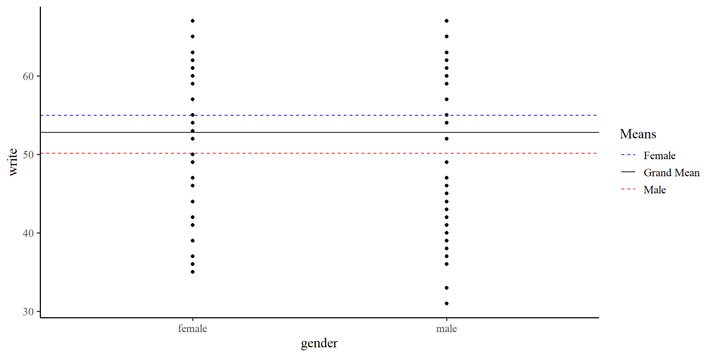

PSYC 7804 - Regression with Lab
The lubridate package (Spinu et al., 2024) provides many functions to help you work with date and times.
The splines2 package (Wang et al., 2024) can be used to calculate splines.
So far we have only dealt with continuous variables. Namely, we have interpreted slopes as “the change in \(Y\) per unit change in \(X\)”.
gender should predict write score, the “unit-change” notion does not make as much sense.
write score on the \(y\)-axis and gender on the \(x\)-axis we can visualize observations in each group. But there are no “units” on the \(x\)-axis 🤔
You can use the lm() function with only one variable. Meaning, you can run a regression without any predictors (!?). for example, for the write variable:
Call: lm(formula = write ~ 1, data = hsb2)
Coefficients:
Estimate Std. Error t value Pr(>|t|)
(Intercept) 52.7750 0.6702 78.74 <2e-16 ***
---
Signif. codes: 0 '***' 0.001 '**' 0.01 '*' 0.05 '.' 0.1 ' ' 1
Residual standard deviation: 9.479 on 199 degrees of freedom
AIC BIC
1470.19 1476.78 I would like to draw attention to the intercept, \(52.78\) and the residual SD, \(9.47\). These values are the mean and SD of the write variable.
If we only use the intercept in out model, the “regression line” will be flat and intercept the \(y\)-axis at the mean of \(Y\).
…but wait a moment, we have two groups, female and male. How about we give each group their own intercept?
write, should differ based on gender.In the previous plot we were using the “grand mean” of write. If we use the two means instead…
We see that the means of the two groups are different.
# A tibble: 2 × 2
gender Group_means
<chr> <dbl>
1 female 55.0
2 male 50.1We can run a regression model that is the representation of the graph on the right
mean_female <- mean(hsb2$write[hsb2$gender == "female"])
mean_male <- mean(hsb2$write[hsb2$gender == "male"])
ggplot(hsb2, aes(x = gender, y = write)) +
geom_point() +
geom_hline(aes(yintercept = mean(mean_female), color = "Female"),
linetype = "dashed") +
geom_hline(aes(yintercept = mean(mean_male), color = "Male"),
linetype = "dashed") +
geom_hline(aes(yintercept = mean(hsb2$write), color = "Grand Mean")) +
scale_color_manual(values = c("Female" = "blue", "Male" = "red", "Grand Mean" = "black")) +
labs(color = "Means")
We can code our categorical variables such that they are treated as continuous variables. Usually, we treat one group as “0”, and the other group as “1”. Let’s say that male is \(0\) and female is \(1\):
hsb2$gender_binary <- ifelse(hsb2$gender == "female", 1, 0)
reg_gender_bin <- lm(write ~ gender_binary, data = hsb2)
summary(reg_gender_bin)
Call:
lm(formula = write ~ gender_binary, data = hsb2)
Residuals:
Min 1Q Median 3Q Max
-19.991 -6.371 1.879 7.009 16.879
Coefficients:
Estimate Std. Error t value Pr(>|t|)
(Intercept) 50.1209 0.9628 52.057 < 2e-16 ***
gender_binary 4.8699 1.3042 3.734 0.000246 ***
---
Signif. codes: 0 '***' 0.001 '**' 0.01 '*' 0.05 '.' 0.1 ' ' 1
Residual standard error: 9.185 on 198 degrees of freedom
Multiple R-squared: 0.06579, Adjusted R-squared: 0.06107
F-statistic: 13.94 on 1 and 198 DF, p-value: 0.0002463\(\mathrm{write} = 50.12 + 4.87 \times \mathrm{gender}\)
male, the intercept is the mean of the male group in write score.
female, the slope is the difference in means between the male and female group in write score (\(50.12 + 4.87 = 54.99\)).
We just tested whether male and female are significantly different in mean write score. This is what you should know as an independent-samples t-test (!).
Two Sample t-test
data: hsb2$write by hsb2$gender
t = 3.7341, df = 198, p-value = 0.0002463
alternative hypothesis: true difference in means between group female and group male is not equal to 0
95 percent confidence interval:
2.298059 7.441835
sample estimates:
mean in group female mean in group male
54.99083 50.12088 You should see that t-values, degrees of freedom, and p-values are the same as those for the slope on the previous slide.
No Coincidences in Statistics
There are no coincidences in statistics. If two methods give some of the same results, they must be related in some way. When you see such patterns, ask yourself why two methods produce the same results. Once you answer that question, you will have gained tremendous insight.
t-tests don’t exist really. For some reason everyone decides to teach t-tests separately from regression, but they are simply a specific case of a regression.
Lab 10: Categorical Predictors